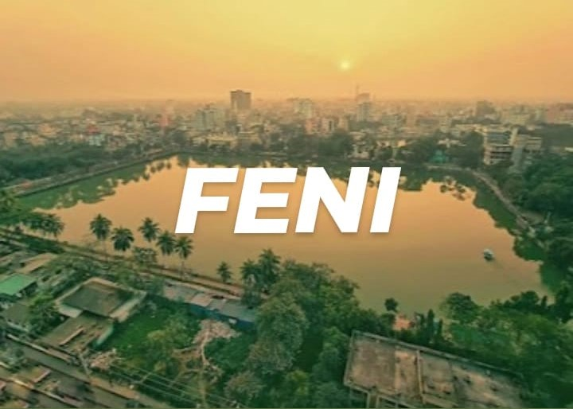
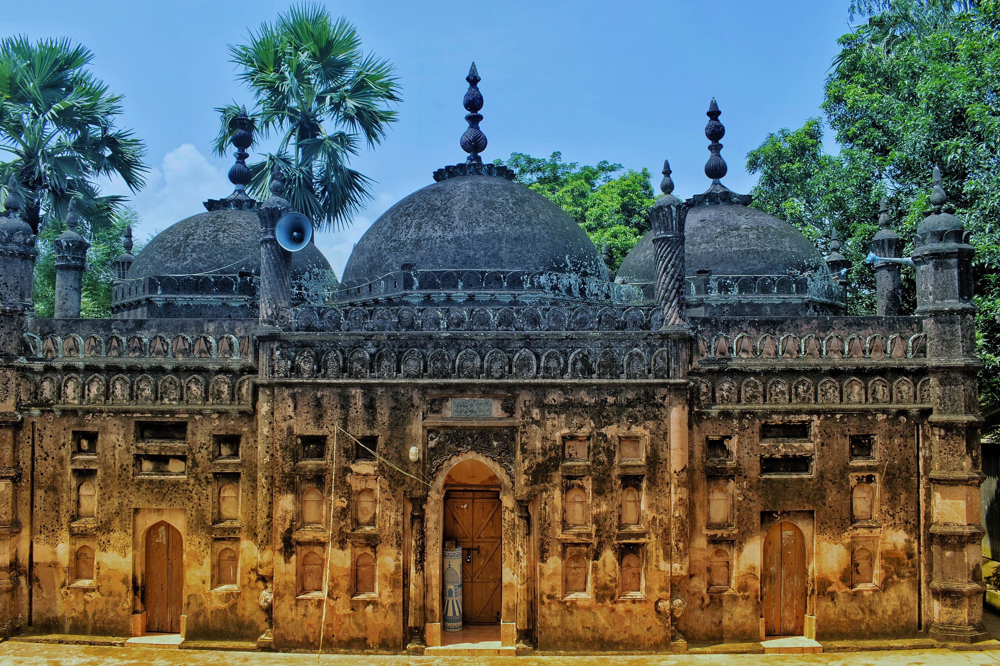
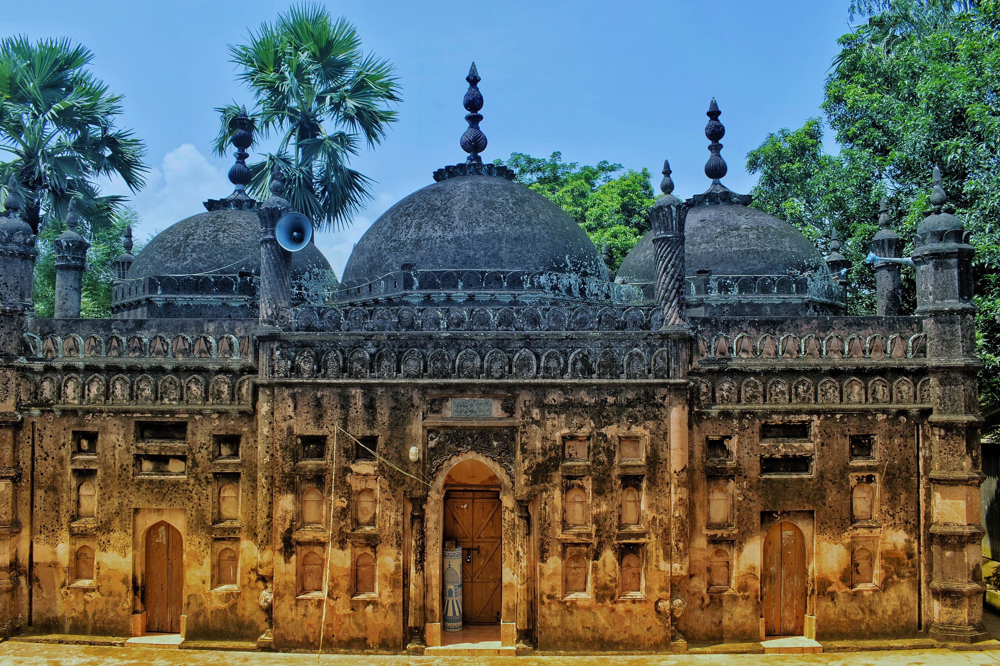
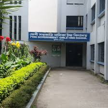
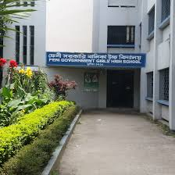

Welcome to Feni
A Gateway to the Heart of Southeastern Bangladesh
INTRODUCTION
Feni is a district located in the southeastern part of Bangladesh, under the Chittagong Division. Despite being one of the smallest districts in the country, Feni holds significant importance due to its strategic location, cultural heritage, and growing economic activities.
HISTORY
Feni got its name from the Feni River.The district was officially established in 1984,carved out from the Noakhali district.
GEOGRAPHY
Feni is bordered by the Comilla district to the north, Chittagong to the south, the Indian state of Tripura to the east, and Noakhali to the west. The Feni River, which flows through the region, adds to its agricultural richness and historical importance.
CULTURE & TRADITION
Feni's culture and tradition are a vibrant tapestry woven from centuries of history,diverse ethnic communities and rich local customs.Feni’s people are known for their warm hospitality. Eid and puja celebrated widely with communal harmony, showcasing the district’s inclusive spirit.. Folk songs such as Bhatiali, Murshidi and Baul songs and village fairs are part of its rich heritage.
ECONOMY
Feni’s economy is a dynamic blend of agriculture, small-scale industry, trade, and remittances, shaped by its strategic location and resourceful population.
FAMOUS PERSONALITIES
There are many famous personalities in feni.Some famous personalities are:
1.Zahir Raihan-a pioneering filmmaker,novelist and journalist.
2.Shahidullah Kaiser-He is Known for his powerful novels and journalism.
3.Selim Al Deen-a renowned playwright
4.Shamsunnahar Mahmud-worker and one of the early female education advocates in Bangladesh.
TOURISTS ATTRACTIONS
1.Feni River–A picturesque waterway ideal for boat rides, fishing, and riverside walks
2.Bijoy Singh Dighi–A tranquil pond surrounded by greenery, perfect for relaxation
3.Nihal Palli–A peaceful retreat with gardens and walking paths
4.Bashpara Seven Temples–A cluster of ancient temples reflecting the district’s religious diversity
5.Sonagazi Muhuri Irrigation Project–A unique blend of engineering and nature, offering scenic views and local biodiversity
6.Chandgazi Bhuiyan Masjid-A historic mosque with deep cultural roots.
Feni may be small in size, but it’s rich in scenic beauty, historical landmarks, and cultural heritage.
 


EDUCATION
1.Feni Girls’ Cadet College
2.Feni Govt College
3.Feni Govt Girls’ High School
4.Feni Govt Pilot High School
5.Govt Zia Mohila College
 
